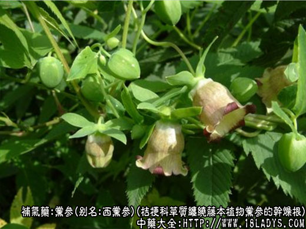
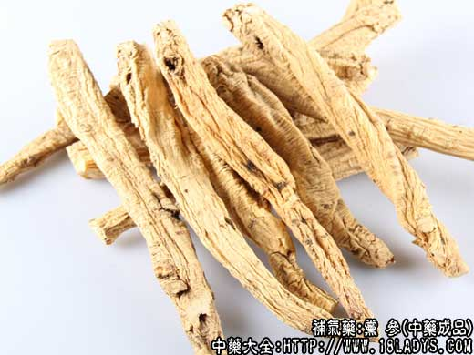
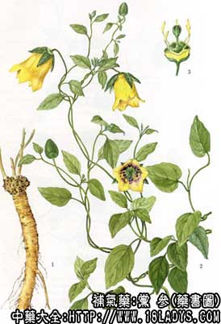

党参为常用中药。古代与人参不分，有人参生上党山谷及辽东之说。陶宏景曰：“上党在冀州西南，今来者形长而黄，状如防风，多润实而甘...，按该所述形味与现党参相同。至清代《本草从新》、《本经逢原》、《纲目拾遗》始有上党人参及防风党参之名。
党参产地甚多，质量差异较大，过去的名称极为复杂。现根据商业、卫生两部颁发的54种中药材规格试行标准，把地区接壤和质量相近的产品，划分为西党、潞党、条党、白党和东党五个品种。各地产品，符合那种质量，即纳入那个品种之内。
1、西党参
别名：文党、晶党、台党。
来源：为桔梗科多年生草质缠绕藤本植物党参的干燥根。多为野生。
产地：主产于甘肃、陕西、四川北部的南坪及山西等省。
性状鉴别：根呈圆柱形，稍弯曲，长10～50厘米，直径0.5～2.5厘米，表面灰褐色或灰黄色。根头部有多数疣状突起的茎痕，通称“狮子盘头”，每个茎痕中央呈凹下点状，生长年久者则痕多而根头较大。根头下有致密的环状横纹，向下逐渐稀疏，有的达全体之半。下部有纵皱纹，并有横长的皮孔及须根痕。支根断落处常见黑裼色胶状物，系内部液汁溢出干燥后形成。皮松肉紧。体柔韧，易折断，断面黄白色，显菊花纹。气特殊,味甜，嚼之无碴。
以条大粗状，横纹多，皮松肉紧，味清甜者为佳。
2、潞党参
别名：白皮党
来源：同西党参。均为栽培。
产地：主产于山西平顺、陵川、壶关、长治、黎城、武乡、河南安阳地区。
性状鉴别：根呈类圆柱形，多不分岐，长10～30厘米，直径0.3～1厘米（栽培年限长，直径在1厘米以上者习称“异条党”，质量较佳）。表面浅灰黄色。“狮子盘头”较小，近根头处有较稀的横纹，全体有深而不规则的纵纹及横向皮孔，皮细嫩而紧密。体结而柔软。断面淡黄色或黄白色，皮层较紧，中央有黄色圆心。气微，味甜。
以独根不分叉，肥壮粗大，断面黄白色者为佳。
3、东党参
别名：吉林党
来源：同西党。栽培及野生。
产地：主产于吉林、辽宁、黑龙江。
性状鉴别：本品呈圆柱形，长约30厘米左右，直径0.7～1.5厘米。表面黄白色至灰裼色，粗糙，具狮盘头，上端有横纹，下端有纵纹，皮孔突起较高。体泡松而质硬，易折断，断面淡黄白色，显裂隙，中心色浅黄。略带膻气，味微甜，嚼之有渣。
以根条粗状，均匀，味甜得为佳。
4、条党参
别名：单枝党，八仙党。
来源：为桔梗科多年生草质缠绕藤本植物川党参的干燥根。多为野生。
产地：主产于四川、湖北、陕西等省。
性状鉴别：根呈长圆柱形（多为条状故称条党）较肥壮，扭曲或顺直。长20～50厘米，直径0.7～2厘米。表面黄白色或糙米色，皮较细致。大条者有“狮子盘头”，但茎痕较少而小，细嫩枝条的芦茎小于正身，称“泥鳅头”。上端略方，有横纹或无，下端有纵纹。体柔润，断面淡黄色，有放射状纹理，中央有黄色圆心。气微，味甜。
以根条肥状，皮细嫩，糖质足，味甜，嚼之无渣者为佳。
5、白党参
别名：叙府参（原集中于四川叙府，现在宜宾故称）贵州党（现多由贵州输出故称）。
来源：为桔梗科多年生草质绕缠藤本植物管花党参的干燥根。均为野生。
产地：主产于贵州、云南及四川西南部。
性状鉴别：根呈圆柱形，稍弯曲，大小不等，长5～20厘米，直径0.5～1厘米。表面黄白色而较光洁。有“狮子盘头”及不明显的横纹，全体多纵皱及点状须根痕。质坚硬、易折断。断面黄白色，有淡黄色心。气微，味微甜而带酸，嚼之有渣。
以上五种党参按质量划分，以西党野生者最佳，条党第二，潞党第三，东党第四，白党最次。
主要成分：含生物硷、皂甙、蛋白质、淀粉、维生素B1、维生素B2等。
药理作用：
1、补中益气，和脾胃：有强壮和健胃作用，能增进新陈代谢，帮助消化，促进乳糜吸收。
2、补血：能使家兔红细胞和血红蛋白增加，其补血作用可能来源于党参本身，以及党参与脾脏某种成分共同作用的结果。
3、降压：动物实验发现，通过扩张周围血管和抑制肾上腺素的作用而降血压。
4、祛痰镇咳。
炮制：切咀，生用。
性味：甘、平。
归经：入脾、肺经。
功能：补中益气，生津。
主治：脾胃虚弱，肺气不足，津伤口渴。
临床应用：
1、用于各种原因引起的衰弱症，特别是脾胃虚弱、消化吸收功能低下，中气下陷、自汗等病症，多配白术、茯苓、淮山药，莲子肉等，方如参苓白术散（见茯苓项下）和四君子汤。四君子汤为治疗脾胃虚弱的基本方，凡属脾虚所致的病症，都可在益气汤基础上加减进行治疗。
2、用于缺铁性、营养不良性贫血，尤其是由于脾胃虚弱、消化吸收功能障碍所致的贫血，以及萎黄病等，多与鸡血藤、当归、白芍、熟地配伍，方如补血汤。临床经验表明，党参确有较好的补血作用。
3、用于慢性咳嗽而有肺虚表现者，尤其是对毒性症状较轻的肺结核疗效较好，取其有祛痰镇咳，补中益气的作用，常与紫菀，五味子，阿胶等配伍。
此外，党参又可用于肾炎，可减轻尿蛋白排出。
附：党参与人参的性能基本相同，故一般补益剂中凡用人参的都可用党参代，四君子汤、六君子汤、归脾汤用党参尤为适宜。但由于党参效力较人参弱，故用量要加大（应为人参的2～3倍）；又由于党参大补元气的力量较弱，且有降压作用，因此，对阳气虚脱（心血管功能不全）的危重病症，仍以用人参为宜。
使用注意：不参与藜芦配伍；气滞和炎盛者慎用，有时为防其气滞，可酌加陈皮或砂仁。
用量：12～30g。单用大剂可至90～120g。
处方举例：
四君子汤（《局方》）：党参12g，白术12g，茯苓12g，炙甘草6g，水煎服。
补血汤：党参12g，鸡血藤30g，当归15g，白芍9g，熟地18g，水煎服。
注：
1、党参古代产山西长治，秦代称上党郡而得名、隋代改为潞州，故又名潞党参。
2、党参除正文所述品种外，已知来源和见到的商品，还有以下品种。
①大头党：为桔梗科植物绿花党和光叶党.主产于四川甘孜州、凉山州及西昌部分地区。一般长约20厘米，直径1.5厘米。棕黄及土黄色，“狮子盘头”特大，尾小，环纹少，质枯硬如柴。味微甜，嚼之多渣。
②甘孜党：为桔梗科植物北路蛇头党（灰白叶党参）及南路蛇头的党的根。主产于四川甘孜州（北部地区藤本，南部地区草本）及西昌地区的盐源，木里等地。根呈圆柱形或扁圆柱形，多单支，一般长约15厘米，直径2厘米，有达3～4厘米者。表面土棕色，根头尖小，有的木质茎基突出，似“蛇头”，横纹不规则，亦有纵皱纹。质坚硬，略柔韧，不易折断，断面黄白色，皮厚，心大而实，黄色，略显花纹。气微，略具甜味，嚼之有渣。
③新疆党参：以桔梗科植物新疆党参的根。主产于新疆。根条略呈圆柱形，长14～60厘米，直径0.8～3厘米。表面淡黄白色，主要特征，本品不呈“狮子盘头”状，头端细瘦，中部膨大，尾端渐细。根的上部有密而深的环状纹，体表面无液汁溢生物。断面乳白色，疏松。裂隙多，呈蜂窝状。
④羊乳（东北称白蟒肉）：为桔梗科植物四叶参（奶参、山海螺）的根。分布于东北，华北、华东及中南各省区。根呈圆锥形及纺锤形，粗壮，顶端有茎痕。表面淡黄褐色，粗糙。有横皱纹，并有小疣状突起。体甚疏松，折断面淡红色，无黄心，裂隙多，有蜂窝。气微，味甜微苦。本品有的地区作党参用，多数地区民间作催乳及滋补强壮药。
这四种党参，不在两部下达标准之内，各随地区销售习惯，其中甘孜党参，在海南岛、江苏等地曾发生中毒现象，据说系混有莨菪根及狼毒所致，现当地已引起注意加工挑出。
近年商品中还有云南产的方棱党参。根方形，起棱带剌，质坚硬；贵州、云南产的幼小根条党参。根条幼小，形似“续断”。枯瘦弯曲。外皮黄褐色，粗糙，纵皱，有的略显“狮子盘头”，断面灰黄色或枯黄。味淡，微苦或苦。（此二种尚不知原植物的科属）。
现各地栽培的党参，大部引自潞党参的路子，产品形态因气候土壤不尽相同，有的也有些变异，如保定地区的产品，因生长快，芦头小，身条粗，皮细嫩，少抽皱，糖分足……。
附：明党参
明党参为较常用中药。本草中未见记载。
来源：为伞形科多年生草本植物明党参的干燥根。野生或栽培。
产地：主产于安徽、江苏、浙江、四川、湖北等地。
采收加工：春季采挖根部，洗净泥土，大小分开，置沸水中煮至透心捞出，刮去外皮，晒干。
性状鉴别：根呈细长圆柱形或纺锤形，长约9～20厘米，直径约0.6～2厘米。表面淡黄白色或淡棕色，微透明，有纵沟及细顺纹，并有少数须根痕。质坚硬，折断面皮部为半透明的淡棕色，角质样，易剥落，中间有一大形淡黄白色木质心。气微，味淡。
以条细长均匀，质坚实而重，表面黄白色，半透明，断面淡黄色者为佳。
炮制：切片，生用。
性味：甘、微苦、微寒。
归经：入肺、胃经。
功能：利肺化痰，和胃止呕，解毒。
主治：咳嗽，呃逆，疗毒。
注：本品在江苏不煮剥去外皮晒干，浙江对半纵向剖开晒干者称“粉沙参”，其性状与明党参基本相同，断面牙白色，粉性，气微香，味甘。效用：同明党参。